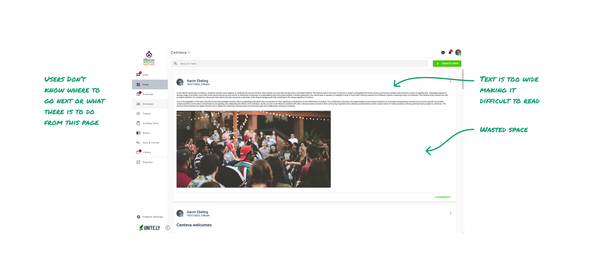
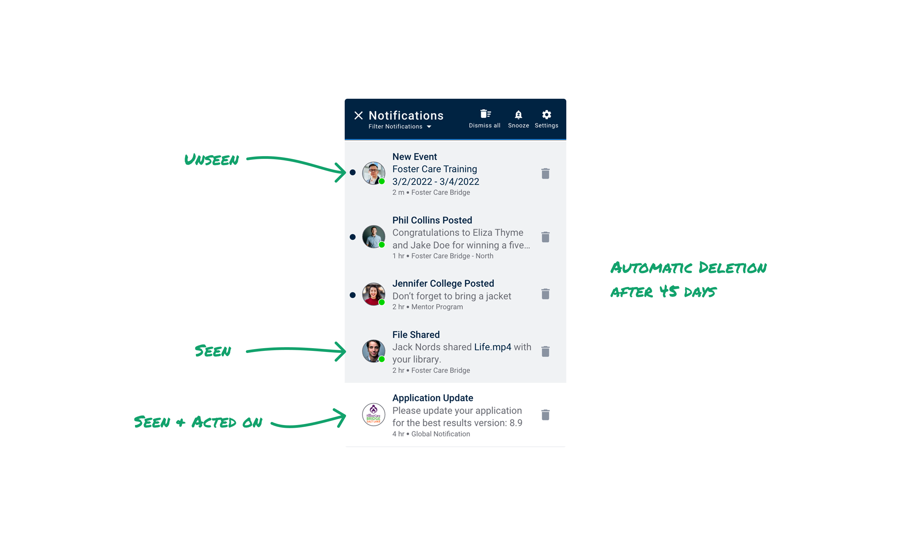
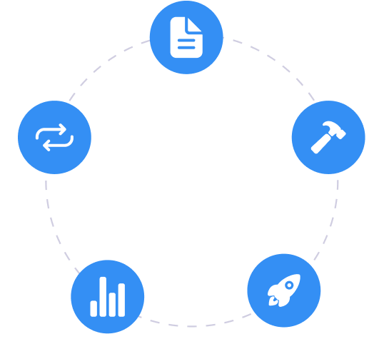

Communities want tools to connect with and grow their members.
Unite.ly’s goal is to put all the tools a community needs in one place.
I worked with stakeholders and users to increase community engagement.
Stakeholders wanted to design a new homepage to increase engagement.

How could I engage users within the program?

Stakeholders loved it, and users liked it.
But it didn’t increase engagement.
90% of our community members only used mobile.
The home page redesign only affected desktop users who were already engaged.
How could I increase engagement in mobile users?
In my design evaluation, I believed the notifications area was turning people off to the program.

So I ran a survey with our clients looking for some validation of my design critique.
While I waited for the survey to get back, I talked with my PM and I got the go ahead to redesign notifications as long as it just involved UI changes.

When I tested it with users they were able to locate information on average 8 seconds faster!
Users asked if snooze was a new feature!
When the survey results came in, my hypothesis was validated.
Out of 50+ responses, 20 talked about their frustration with the notification system.
Unite.lys notification dot only went away when a user either clicked on the notification or when the user deleted the notification.
But people kept notifications active till they knew they could complete the action.
Notifications piled up and users disengaged.
So I tested prototypes with new notification behaviors:

Users said, “this is exactly what we have been needing for a long time.”
Users felt more confident engaging with the program and in keeping their community tools all in one place.
I came back to my PM and presented findings to my stakeholders. They loved the presentation and we got the go ahead to build it.
Although project funding was cut before the notification designs were implemented, users developers and stakeholders gained an appreciation of UX process.
